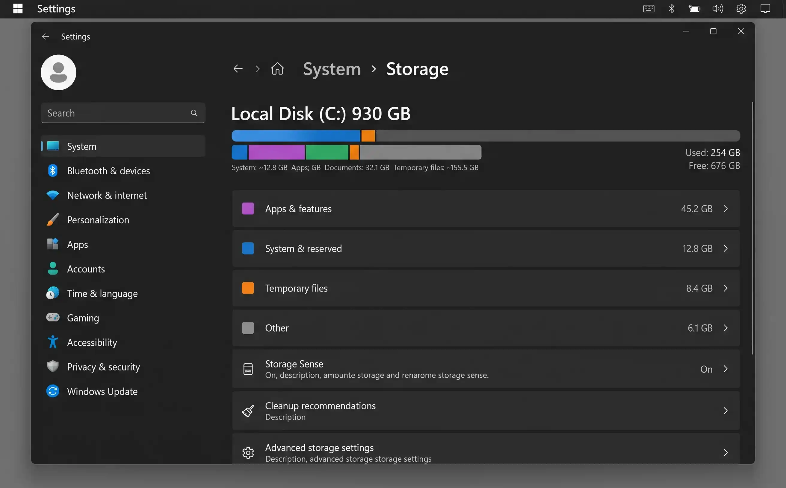
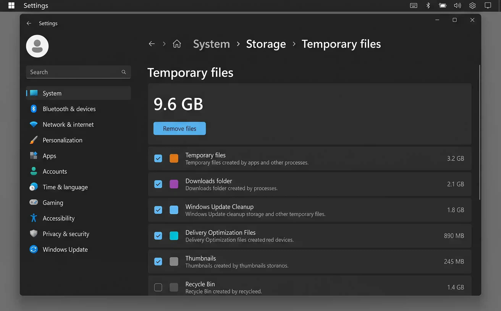
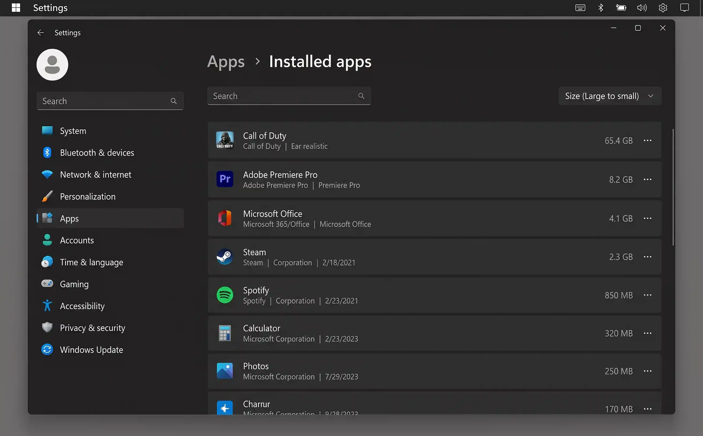

Why your Windows 11 disk fills up (faster than you'd expect)
Windows 11 is a hungry operating system. A fresh installation takes roughly 27 GB, and it grows from there — every feature update leaves behind gigabytes of rollback files, the Windows Update cache accumulates old patches, temporary files pile up from browsers and applications, and the Downloads folder quietly becomes a graveyard of installers, PDFs, and ZIP files you extracted once.
On a 256 GB laptop — still the most common configuration sold in 2026 — this means you can find yourself with less than 20 GB of free space within a year of normal use. But the bulk of that consumed storage is completely safe to remove. Windows just doesn't clean it up automatically by default.
Before doing anything, go to Settings → System → Storage and wait a few seconds for the bar chart to load. It shows you exactly how your disk space is divided between apps, temporary files, system files, and your personal data. This tells you which method below will give you the biggest win — start there.

Settings → System → Storage shows a full breakdown of your disk usage. Click any category to drill deeper into exactly what's consuming space.
Step 1 — Check what's using your space
The storage breakdown in Settings is your roadmap. It splits your disk usage into clear categories: Apps & features, Temporary files, Other, System & reserved, and your personal folders (Desktop, Documents, Pictures, etc.).
-
1
Open Settings → System → Storage
Press Win + I to open Settings, then click System in the left sidebar and Storage on the right. Wait a few seconds for Windows to calculate the breakdown.
- 2
-
3
Click "Show more categories"
This reveals additional categories like OneDrive, Mail, and Maps that may be consuming more space than you realise.
Click on any coloured segment or category label to drill down. Clicking Apps & features takes you directly to your installed apps sorted by size — the same view you'd reach from Settings → Apps → Installed apps.
Step 2 — Enable Storage Sense (automatic cleanup)
Storage Sense is Windows 11's built-in automatic cleaner. Once enabled, it runs in the background and removes temporary files, empties the Recycle Bin, and deletes old Downloads folder content on a schedule you control. It's the single most impactful setting you can enable because it prevents disk space from filling up again after you've cleaned it.
How to enable and configure Storage Sense
-
1
Open Settings → System → Storage
You'll see Storage Sense listed under the storage breakdown. Click on it.
-
2
Toggle Storage Sense on
Flip the switch at the top of the page. Storage Sense is now active and will run automatically.
-
3
Configure the cleanup schedule
Set "Run Storage Sense" to Every month (recommended). Under "Delete files in my recycle bin if they have been there for over", choose 30 days. Under "Delete files in my Downloads folder if they haven't been opened for more than", choose 30 days or 60 days.
-
4
Run it now
Scroll to the bottom and click "Run Storage Sense now" to trigger an immediate cleanup. Windows will report how much space was freed.
If you use OneDrive, Storage Sense can also make locally cached OneDrive files "online only" if they haven't been opened recently. This is safe — the files remain in OneDrive and re-download automatically when you open them. Enable this under the "Locally available cloud content" section.
Step 3 — Run Disk Cleanup for system files
The classic Disk Cleanup tool (cleanmgr) has been part of Windows for decades and it remains the most effective way to remove Windows Update leftovers, previous Windows installations, and system error memory dumps — categories that Storage Sense doesn't always catch. On a system that's been running for a year or more, this single step can reclaim 5–15 GB.
How to run Disk Cleanup with system files
-
1
Open Disk Cleanup
Press Win + S, type Disk Cleanup, and click the result. Select your C: drive if prompted.
-
2
Click "Clean up system files"
This is the key step most people miss. The initial view only shows user-level temp files. Clicking Clean up system files rescans the drive and adds categories like Windows Update Cleanup, Previous Windows installations, and Device driver packages.
-
3
Tick the large categories
Check Windows Update Cleanup, Previous Windows installation(s), Delivery Optimisation Files, Temporary Windows installation files, and Thumbnails. The total space you'll gain is shown at the top.
-
4
Click OK → Delete Files
Confirm the deletion. This may take a few minutes for large cleanups. Your PC may feel slightly faster afterwards because the disk has more breathing room.
Deleting Previous Windows installations and Windows Update Cleanup files means you can no longer uninstall recent Windows updates or roll back to a previous version of Windows. If your system is running fine and you've had the latest update for a couple of weeks, this is perfectly safe. If you're experiencing issues with a recent update, skip these two categories.
Step 4 — Delete temporary files
Windows 11 has a dedicated temporary files manager in Settings that gives you more granular control than Disk Cleanup. It shows you exactly what types of temporary data exist, how much space each type consumes, and lets you choose what to delete.
How to review and delete temporary files
-
1
Open Settings → System → Storage → Temporary files
Click Temporary files in the storage breakdown. Windows scans your drive — this may take 30–60 seconds.
-
2
Review what's safe to delete
Windows pre-selects the safest categories. The following are always safe to tick: Temporary files, Thumbnails, Delivery Optimisation Files, Microsoft Defender Antivirus, and Temporary Internet Files.
-
3
Consider "Downloads" carefully
Windows may show your Downloads folder here. Only tick it if you're certain there's nothing in Downloads you still need. A quick look in File Explorer first is worth the 30 seconds.
-
4
Click "Remove files"
Windows deletes the selected categories. The storage breakdown updates immediately.

The Temporary Files screen in Settings lets you see exactly what's safe to remove and how much space each category occupies.
If you're having problems with a recent Windows update and may need to uninstall it, leave Windows Update Cleanup unchecked. Once those files are gone, you lose the ability to roll back.
Step 5 — Find and remove large files
Sometimes the biggest space hogs aren't system files at all — they're a 12 GB game installer you downloaded six months ago, a virtual machine image, or a video project you finished last year. Windows 11's File Explorer has built-in search filters that make finding these straightforward.
Using File Explorer's size filter
-
1
Open File Explorer and navigate to your C: drive
Press Win + E, then click This PC in the left sidebar, then double-click your C: drive (or whichever drive is full).
-
2
Type
size:giganticin the search boxThis filters results to files larger than 4 GB. For a broader search, use
size:huge(1–4 GB) orsize:large(128 MB – 1 GB). The search may take a minute or two to scan the entire drive. -
3
Sort results by size
Click the Size column header to sort largest first. Review each file — if it's an old installer (.exe, .msi), a downloaded ISO, or a file you no longer need, delete it.
Use WinDirStat or TreeSize Free for a visual overview
For a more powerful view, download WinDirStat (free, open source) or TreeSize Free (free, from JAM Software). Both scan your entire drive and display a visual treemap where each file and folder is represented by a rectangle sized proportionally to the space it consumes. This makes it trivially easy to spot the outliers.
If you find large files in system directories, leave them alone — deleting system files can break Windows or installed applications. Focus on your user folders: Downloads, Documents, Desktop, Videos, and any custom project folders.
Step 6 — Uninstall apps you don't use
Installed applications are often the single largest category on a Windows PC. A modern game can consume 50–100 GB. Creative suites like Adobe Creative Cloud routinely take 10–30 GB. And most people have a handful of applications they installed for a specific purpose, used once, and forgot about.
How to find and uninstall large apps
-
1
Open Settings → Apps → Installed apps
Press Win + I, click Apps in the left sidebar, then Installed apps.
-
2
Sort by size
Click the "Sort by" dropdown and choose Size (large to small). This immediately reveals the biggest offenders.
-
3
Uninstall apps you no longer need
Click the three-dot menu (⋯) next to an app and select Uninstall. For traditional desktop apps, this launches the app's own uninstaller. For Microsoft Store apps, it removes them instantly.

Sorting Installed apps by size reveals the biggest space consumers at a glance. Games and creative suites are almost always at the top.
Many pre-built PCs come with trial software, manufacturer utilities, and promotional apps you never asked for. If you see apps from your PC manufacturer that you don't recognise or use (branded "companion" apps, "support assistant" tools, trial antivirus software), they're usually safe to uninstall.
Step 7 — Move files to OneDrive or external storage
If your drive is full of files you genuinely need — work documents, family photos, video projects — the solution isn't to delete them but to move them somewhere else. OneDrive (built into Windows 11) and external drives are the two best options.
OneDrive Files On-Demand
OneDrive's Files On-Demand feature works similarly to iCloud's Optimise Storage: files stored in OneDrive appear in File Explorer as if they're on your local drive, but they only download when you actually open them. The rest of the time, they're stored in the cloud and take up almost no local space.
-
1
Open OneDrive settings
Click the OneDrive cloud icon in the system tray (bottom-right of the taskbar), click the gear icon, then Settings.
-
2
Enable Files On-Demand
Under the Sync and backup tab, go to Advanced settings and ensure "Free up disk space" under Files On-Demand is enabled.
-
3
Free up space for existing files
In File Explorer, right-click any file or folder synced to OneDrive and select Free up space. The file remains visible but is stored only in the cloud until you open it.
Move large folders to an external drive
For large collections — video projects, game libraries, old backups — an external USB drive or an SD card (on laptops with a card slot) is the simplest solution. Move the folder, then create a shortcut on your Desktop or pin it to Quick Access so you can still find it easily.
If games are your biggest space consumer, Steam lets you add a second library folder on any drive. Go to Steam → Settings → Storage, add your external or secondary drive, then move individual games to that drive. Other launchers (Epic, GOG Galaxy) offer similar features.
Where Windows hides cached data
Beyond the system tools above, various applications store cached data in locations you might not think to check. Here are the most common culprits:
| Location / App | What it caches | How to clear | Typical saving |
|---|---|---|---|
| Browser caches | Cached websites, images, scripts, cookies | Browser settings → Clear browsing data (or Ctrl + Shift + Delete) | 500 MB – 4 GB |
| %TEMP% folder | App temporary files, installer leftovers | Press Win + R, type %temp%, select all, delete (skip any in use) |
500 MB – 3 GB |
| Windows Update cache | Downloaded update packages | Disk Cleanup → Clean up system files → Windows Update Cleanup | 1 – 10 GB |
| Spotify | Offline downloads, streaming cache | Spotify → Settings → Storage → Clear cache | 500 MB – 5 GB |
| Discord | Cached images, video, emoji, updates | Delete contents of %appdata%\discord\Cache |
200 MB – 2 GB |
| Teams | Cached chats, meeting data, files | Delete contents of %appdata%\Microsoft\Teams\Cache |
300 MB – 2 GB |
Quick wins — ranked by effort vs. reward
| Action | Time needed | Typical space saved | Difficulty |
|---|---|---|---|
| Run Disk Cleanup with "Clean up system files" | 5 min | 3 – 15 GB | Easy |
| Delete temporary files in Settings | 3 min | 1 – 8 GB | Easy |
| Uninstall top 3 largest unused apps | 5 min | 2 – 30 GB | Easy |
| Enable Storage Sense | 2 min | Ongoing prevention | Easy |
| Clear browser caches | 2 min | 500 MB – 4 GB | Easy |
| Empty the Recycle Bin | 1 min | 500 MB – 5 GB | Easy |
| Clear the Downloads folder | 5 min | 1 – 10 GB | Easy |
| Move files to OneDrive or external storage | 15 min | 5 – 50+ GB | Medium |
Keeping disk space clear going forward
A one-time cleanup is valuable, but the goal is to never see that "Low Disk Space" notification again. Four habits keep your Windows 11 drive healthy permanently:
- Keep Storage Sense on. Set it to run monthly with automatic Recycle Bin and Downloads cleanup. This single setting prevents 80% of gradual disk bloat.
- Monthly Downloads folder sweep. Once a month, open your Downloads folder, sort by date, and delete anything older than 30 days that you've already used or no longer need. Installers, ZIP files, and PDFs accumulate fast.
- Run Disk Cleanup after major updates. Windows feature updates (the big ones, twice a year) leave behind gigabytes of rollback files. If the update is working fine after two weeks, run Disk Cleanup with Clean up system files to reclaim that space.
- Uninstall as you go. Finished a game? Uninstall it — you can always redownload it from Steam or your game launcher. Tried an app and didn't like it? Remove it immediately rather than letting it sit.
First of the month: check the Storage breakdown (1 min), empty the Recycle Bin (30 sec), clear the Downloads folder of old files (3 min), clear browser cache (1 min). That's under 6 minutes to keep your PC running smoothly all month.